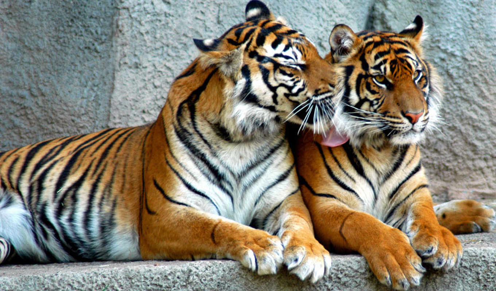
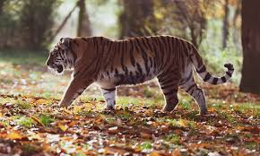

Тигров отличает гибкое, мускулистое тело и круглая голова с выпуклым лбом, выразительными глазами и небольшими, но
чуткими к звукам ушами.
Тигры прекрасно видят в темноте, а по утверждению ученых, могут различать цвета.
Бенгальский и амурский тигры являются самыми крупными в своем виде.
В дикой природе тигры в основном питаются копытными: для бенгальского тигра основной добычей являются такие виды, как олень индийский замбар, аксис, дикий кабан и нильгау; для амурского тигра — благородный олень, пятнистый олень, кабаны, косули и кабарга; для суматранского тигра — олень самбар, дикий кабан и чепрачный тапир. Также тигры могут охотиться на больших травоядных, таких как индийский буйвол, гаур и лось. Кроме того, время от времени тигры питаются и нетипичными для их рациона животными, такими как обезьяны, фазаны, зайцы, рептилии и даже рыба. Для полноценного питания тигру требуется порядка 50—70 копытных в год. У убитого оленя или кабана тигр может оставаться несколько дней, в течение которых поедает тушу. Взрослые индийские слоны чаще всего являются недосягаемой добычей для тигра, поэтому большие кошки стараются избегать встреч с ними, однако иногда они могут убивать молодых слонят. Есть неподтверждённые сообщения об удачных нападениях тигров на взрослых слонов. Например, Кесри Сингх приводит случай убийства тигром взрослого слона[60]. Также известен по крайней мере один случай, когда тигр убил взрослую самку индийского носорога. Иногда тигры могут охотиться на домашних животных, таких как собаки, коровы, лошади и ослы. Растительную пищу — орехи, траву, фрукты — употребляют только летом[61]. За раз тигр съедает до 30—40 кг мяса. Оголодавшие крупные самцы могут съесть до 50 кг мяса[23]. Временное отсутствие пищи тигры переносят без ущерба для себя, благодаря наличию подкожной жировой клетчатки, слой которой у амурского тигра может достигать 5 см.
 